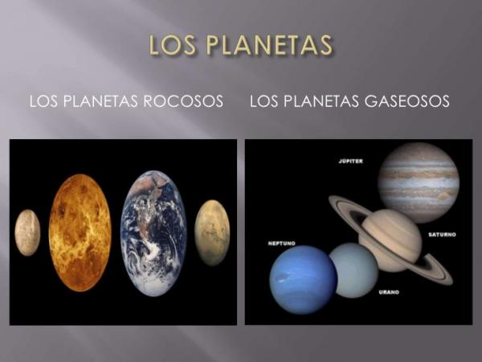
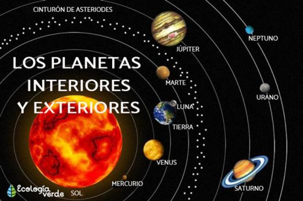

Una de las principales formas de clasificación de los planetas se hace según la composición del planeta mismo. Los planetas, según su composición, pueden ser:

Otra forma de clasificación de los planetas muy utilizada debido a su facilidad es aquella que atiende a su distancia respecto a su nuestra estrella, el Sol. Dentro de esta clasificación existen dos partes: por un lado se encuentran los planetas del Sistema Solar, que siguen una clasificación utilizada en exclusiva para ellos, ya que utiliza como punto de separación el cinturón de asteroides del sistema solar.

Posiblemente la clasificación de los planetas más usada es la clasificación geofísica o mediante códigos. Esta clasificación permite organizar a los planetas atendiendo a dos parámetros: composición y masa. Hay que tener en cuenta que la composición y masa de un planeta vendrán determinadas en gran medida por otras condiciones que se dan en el planeta como la temperatura, la presión, las fuerzas electromagnéticas, etc.
Cada uno de los planetas tendrá asignado dos códigos en esta clasificación: código de composición y código de masa.
En primer lugar, tienen un código de composición, que describe la naturaleza del material que compone al planeta: ¿es rocoso, helado o gaseoso? Si la mayoría del planeta es una roca, se le asigna la letra R, mientras que si la mayoría del planeta está helado se le clasifica como I o como G, si la mayoría del planeta está en estado de gas.
Dentro de estos grupos podemos encontrar subgrupos: Venus y la Tierra son planetas rocosos con gran cantidad de silicatos por lo que se les asigna el código Rs; en cambio, Urano y Neptuno, los gigantes helados, tienen un núcleo rocoso que supone alrededor del 25% de su composición, un manto líquido que apenas contribuye a su masa total y una envoltura molecular de hidrógeno, helio y metano que supone entre el 10 y el 15% en forma gaseosa y entre el 60 y el 65% en forma helada.
En segundo lugar se encuentra el código de masa. Este código describe la masa que tiene el planeta en comparación a la de otros. Podemos encontrar 5 grupos de clasificación de los planetas según su masa: P1, planetas con masa similar a las enanas marrones; P2, planetas con masa similar a la de Júpiter; P3, planetas con masa similar a la de Neptuno; P4, planetas con masa similar a la de la Tierra y P5, para planetas con masa similar a Ganímedes.
Siguiendo la clasificación geofísicia, Marte y la Tierra estarían dentro del mismo grupo, el P4Rs mientras que Mercurio estaría dentro del P4Rm (tiene una masa similar a la Tierra pero con composición rocosa metálica), Saturno sería P2G23 y Tritón P5Ri, por poner algunos ejemplos.